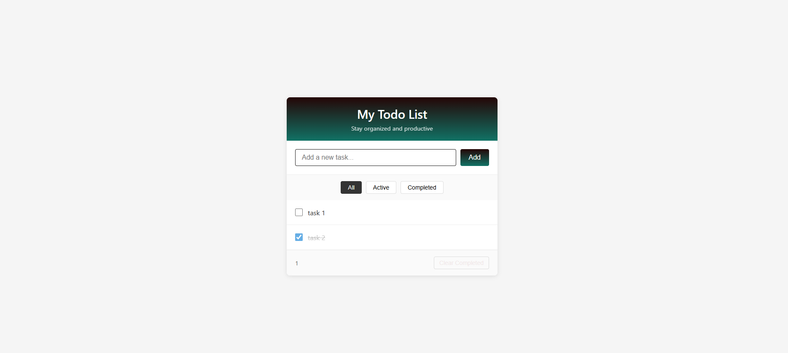

The Todo List is a fully-functional task management application built with vanilla JavaScript. It
demonstrates core web development concepts including DOM manipulation, event handling, and client-side data
persistence

Key features include real-time task filtering, input validation, and a clean, intuitive user interface. The
application uses localStorage to persist data across browser sessions, ensuring users never lose their
tasks.
This project showcases my ability to build complete, user-focused applications without relying on frameworks,
emphasizing fundamental JavaScript skills and attention to user experience details.
Features
- Add & Delete Tasks: Create new tasks with minimum 3-character validation. Delete individual
tasks with confirmation dialog (hover to reveal delete button).
- Mark as Complete: Click checkbox to mark tasks complete. Completed tasks display with
strikethrough styling for clear visual feedback.
- Smart Filtering: Filter tasks by status - view All tasks, Active tasks only, or Completed
tasks. Active task counter updates in real-time.
- Data Persistence: All tasks are saved to localStorage, ensuring your todo list persists
across browser sessions and page refreshes.
- Bulk Actions: Clear all completed tasks at once with the "Clear Completed" button for easy
list management.
- Input Validation: Prevents empty tasks and requires minimum 3 characters. User-friendly
alerts guide proper input.
Technologies Used
- HTML5 - Semantic structure
- CSS3 - Responsive styling and animations
- Vanilla JavaScript (ES6+) - Core functionality
- localStorage API - Data persistence
- GitHub Pages - Deployment